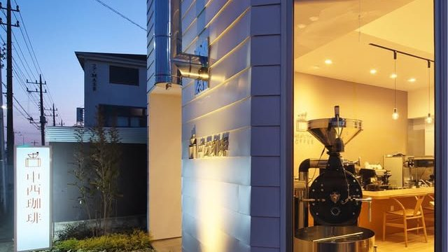
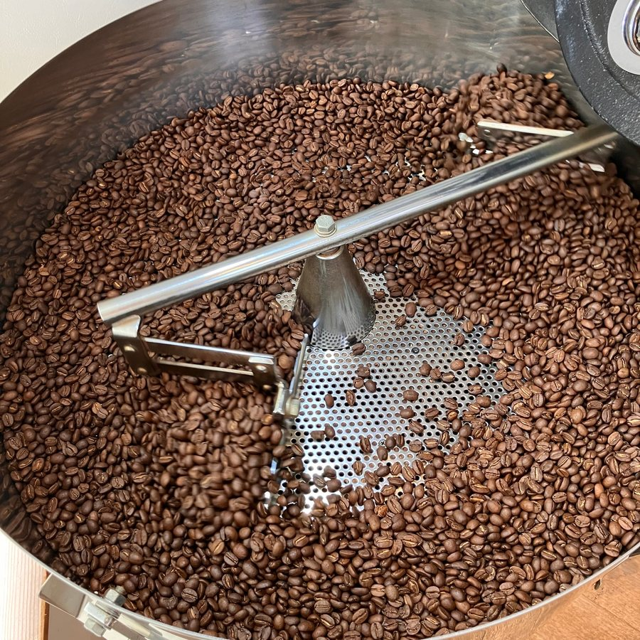
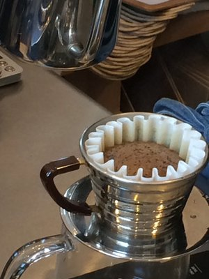
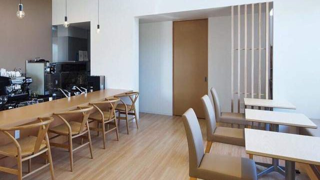
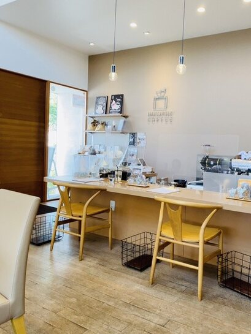
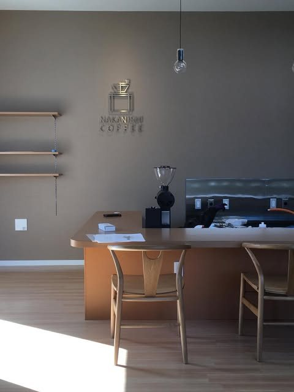
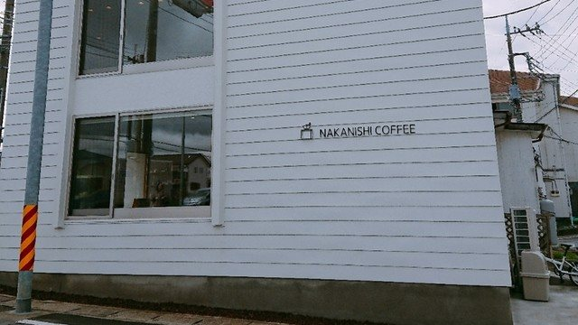
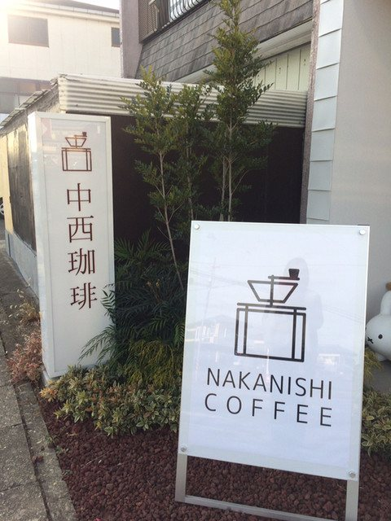
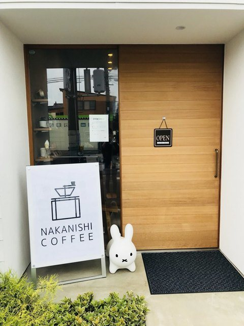

野木町の、自家焙煎の珈琲店です。
ブラジル・グアテマラ・エチオピア。
三つを合わせて、ノギマチブレンド。
10:00〜19:00／日曜・第2・第4土曜は定休（栃木県下都賀郡野木町丸林675-5）
ノギマチブレンドNOGIMACHI BLEND

野木町をはじめ、多くの方に親しんでいただきたい。その思いから、当店のハウスブレンドに「ノギマチブレンド」と名前をつけました。ブラジル・グアテマラ・エチオピアの三つを合わせております。バランスが良く、毎日お飲みいただける珈琲です。
豆は店で焼いております。焼き上がりはすぐに冷まし、店頭とオンラインショップでお分けしております。深煎りがお好きな方には、同じ三つの産地を深く焼いた「クラシックブレンド」もご用意しております。
一杯ずつ、お湯を注いでお淹れします。
お待ちいただくぶん、香りの立ったところをお出しします。



1階にローカウンターとテーブル席、2階にお座敷をご用意しております。お座敷ではお子さま連れのお客様にも、ごゆっくりお過ごしいただけます。
おひとりでも、お連れさまとでも。豆をお求めになるだけのご来店も歓迎しております。お車は店舗の横と裏手にお停めいただけます。


珈琲は蓋つきのカップでお持ち帰りいただけます。豆は店頭でお分けしているほか、オンラインショップからもお求めいただけます。ご自宅用にも、遠方のお客様にも。
オンラインショップでは、ノギマチブレンドのドリップバッグもお取り扱いしております。ご自宅用にも、贈りものにもお使いいただけます。
オンラインショップを見るキャラメルラテを注文したら、こんなかわいいねこちゃんのラテアートしてくださいました
お客様の声より
靴を脱いで座敷形式のテーブル席へ。子供用の椅子もあり
お客様の声より
とっても素敵な雰囲気で癒されました
お客様の声より

JR宇都宮線 野木駅から歩いて10分ほど、丸林の通り沿いにございます。白い壁の建物に「NAKANISHI COFFEE」の看板を掲げております。お車でお越しの際は、店舗の横と裏手の駐車場をご利用ください。


| 住所 | 〒329-0111 栃木県下都賀郡野木町丸林675-5 |
|---|---|
| 電話 | 0280-23-6403 |
| 営業時間 | 10:00〜19:00 |
| 定休日 | 日曜日・第2・第4土曜日 |
| お席 | 1階 ローカウンターとテーブル席／2階 お座敷 |
| 駐車場 | 店舗の横と裏手にご用意しております |
| @nakanishicoffee季節のお品書きや焙煎の日は、こちらでもお知らせしております。 | |
| オンラインショップ | nakanishi226.thebase.in |